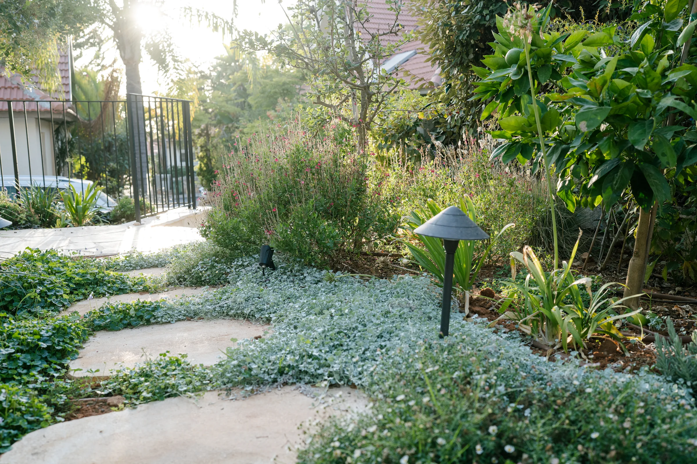
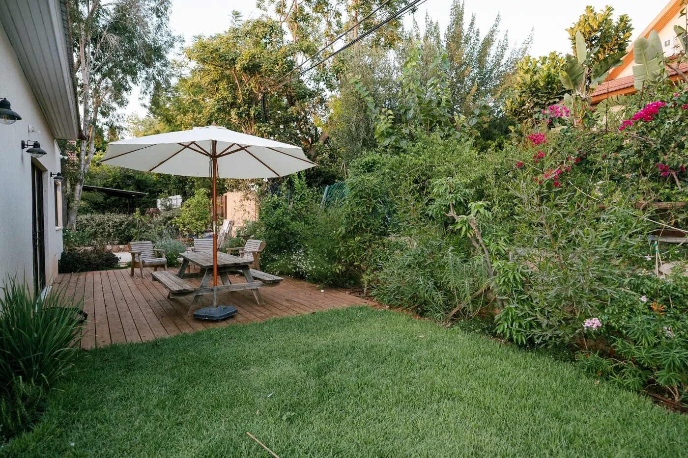

תכנון נוף וגינון ים־תיכוני
ברוכים הבאים לנוף וחורש, משרד לתכנון נוף וגינון ים־תיכוני. פועלים בכל הארץ, בהובלת איתי שסטצקי.
אנחנו מתכננים, מקימים ומטפחים גינות חיות, בהקשבה לאדמה, לעונות השנה ולאנשים שגרים בבית.
15 שנות ניסיון בתכנון, הקמה, שיקום ותחזוקה, בגינות פרטיות, מסחריות וציבוריות.



גינות שהקמנו
כל גינה מתחילה בצורך אחר: מתנת יום הולדת, פאטיו בלי שמש, רצועה צרה בכניסה, גינה שמזינה משפחה ומטופלים.
לכל הגינות שהקמנוהגישה שלנו
לפני שבוחרים צמח, אנחנו מסתכלים איך האור נכנס לבית, מאיפה נושבת הרוח, לאן זורמים המים, מה רואים מהשכנים ואיך אתם חיים במרחב.
מתוך זה נולדת חלקת טבע ים־תיכונית שמחוברת לבית ולנוף.
עוד על נוף וחורש

גינה שלמה, מהחצר הריקה ועד הצל הראשון
אנחנו מתכננים ומקימים גינות ים־תיכוניות לבתים פרטיים בכל הארץ.
הצוות של נוף וחורש מקים את הגינה: טיוב האדמה בקומפוסט, השקיה בטפטוף, אבן ועץ, ואז הצמחים. איש קשר אחד לכל הדרך.
איך זה עובדגינה מטופלת, בלי ריסוסים מיותרים
תחזוקה היא לא רק כיסוח דשא. זה גיזום נכון, הזנה של האדמה, החלפת עונות וטיפול שמביא את הגינה לתוצאה שאליה תוכננה.
לתחזוקה
הגינה הבאה יכולה להיות שלכם.
ספרו לנו מה יש לכם היום, חצר, מרפסת או רצועה בכניסה, ומה הייתם רוצים שיהיה שם.
לתיאום פגישת היכרות